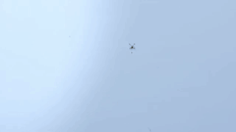

Satélites Enlatados 2017 - 2018

La Universidad Nacional Autónoma de México y el Programa Espacial Universitario (PEU) te invitan a participar en el concurso de Satélites Enlatados, CanSat 2017-2018.
Dependiendo del objetivo con el que el Satélite Enlatado sea desarrollado, sus subsistemas pueden variar, pero principalmente tienen los siguientes elementos:
Los participantes serán estudiantes y deberán inscribirse en alguna de las siguientes categorías:
- MIZTLI (Licenciatura)
- Misión principal: construir un CanSat que soporte las condiciones del lanzamiento, deberá transmitir telemetría (velocidad, presión, temperatura, altitud y aceleración) a una estación terrena desde su lanzamiento hasta el aterrizaje. Deberá mantener a salvo en su interior un huevo, a lo largo de todo el trayecto y hasta el aterrizaje.
- IYARI (Medio Superior)
- Misión principal: construir un CanSat que soporte las condiciones del lanzamiento, deberá transmitir telemetría (velocidad, presión, temperatura, altitud y aceleración) a una estación terrena desde su lanzamiento hasta el aterrizaje.
BASES:
- Rover-back. Una vez que el Satélite Enlatado ha tocado tierra, de alguna manera se desplaza para alcanzar un punto geográfico definido.
- Fly-back. Durante su caída, el Satélite Enlatado controla su caída para alcanzar un punto geográfico definido como su objetivo.
- Descenso controlado. En este caso, el descenso puede incluir el requerimiento de controlar, además del punto en el que tocará tierra, la velocidad, posición o dinámica que deberá presentar durante su caída.
- Resistencia a impacto. Los Satélites Enlatados siempre deben estar diseñados para soportar los impactos resultantes de su caída. En algunas ocasiones, las misiones pueden incluir la supervivencia de elementos sensibles a movimientos bruscos o cualquier condición mecánica violenta, como pueden ser huevos, y es en estos casos donde se debe poner especial énfasis en el diseño estructural del dispositivo.
- Medición de parámetros atmosféricos. Esta suele ser la misión más común y sencilla de los Satélites Enlatados, que consistente en recabar datos de parámetros físicos y químicos de la atmósfera durante su caída.


La UNAM ha tenido actividades relacionadas con los Satélites Enlatados desde hace varios años; ejemplo de ello son las competencias CanSat organizadas por la Red Universitaria del Espacio entre 2013 y 2016, de las que se desprendieron las publicaciones de los mejores reportes realizados por los estudiantes que participaron:
- Cansat RUE 2013
- Cansat RUE 2014
A la fecha, el Programa Espacial Universitario ha organizado dos ediciones de un Concurso de Satélites Enlatados. Su primera edición, dirigida a estudiantes de nivel bachillerato y licenciatura de la UNAM, se realizo entre finales del 2017, y mediados del 2018; la segunda edición, que actualmente está en marcha, es a nivel Nacional e incluye la participación de estudiantes de nivel licenciatura y posgrado de instituciones educativas de todo el país.